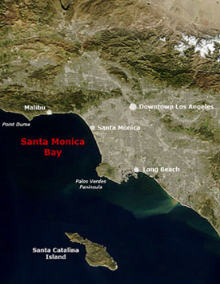
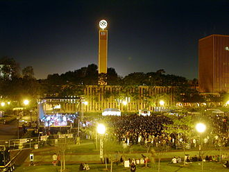

Los Angeles is a sprawling city in Southern California and the center of the American film and television industry. Not far from the legendary Hollywood sign, studios such as Paramount Pictures, Universal and Warner Brothers offer tours of their sets. The TCL Chinese Theater on Hollywood Boulevard features the hand and footprints of famous actors, while the Walk of Fame honors thousands of Hollywood greats and vendors offer maps of star and celebrity homes.
The city was officially founded by Spanish governor Felipe de Neve on September 4, 1781 as El Pueblo de la Reina de Los Ángeles. The name thus referred to Mary as Queen of the Angels, a Marian title derived from the Litany of Lauretania. Today's name Los Angeles is a shortening of the founding name to "the angels". The unofficial name El Pueblo de Nuestra Señora la Reina de los Ángeles del Río de Porciúncula. He makes specific reference to the Basilica of Santa Maria degli Angeli in Assisi, built over the Portiuncula chapel where Francis of Assisi died. He was the founder of the order that included the missionaries who came to America with the explorers. The abbreviation frequently (also colloquially) used is "L.A.". Because of the Spanish meaning of the city name, the city is nicknamed the City of Angels.
Los Angeles' downtown and suburbs sit in a hilly coastal region averaging 100 meters above sea level. To the west and south, the city borders the Santa Monica Bay of the Pacific Ocean. It is surrounded by mountain ranges to the east and north. Also north of the city is the San Fernando Valley, where a third of residents live in single-family homes. The valley is bounded by Griffith Park and the Santa Monica Mountains from Hollywood and downtown.
The climate of Los Angeles is mild to hot year-round, and mostly dry. It is classified as a Mediterranean
climate, which is a type of dry subtropical climate. It is characterized by seasonal changes in rainfall—with a dry summer
and a winter rainy season. Under the modified Köppen climate classification, the coastal areas are classified as Csb,
and the inland areas as Csa.
The Los Angeles area contains microclimates, where daytime temperatures can
vary as much as 36 °F (20 °C) between inland areas such as the San Fernando Valley or San Gabriel Valley,
and the coastal Los Angeles Basin.
Los Angeles, often referred to by its initials L.A., is the largest city in California. With a 2020 population of 3,898,747 it is the second-largest city in the United States, following New York City. Los Angeles is known for its Mediterranean climate, ethnic and cultural diversity, Hollywood film industry and sprawling metropolitan area. The City of Los Angeles lies in a basin in Southern California, adjacent to the Pacific Ocean, and extends through the Santa Monica Mountains and into the San Fernando Valley, covering a total of about 469 square miles (1,210 km2). It is the seat of Los Angeles County, which is the most populous county in the United States with just over 10 million residents in 2020.
Each year on Easter Sunday, the Easter Sunrise Service at the Bowl is an ecumenical early morning Easter service at the Hollywood Bowl in Hollywood. The Jimmy Stewart Relay Marathon, a charity relay race, is held in Griffith Park in mid-April. Other April events include the Rose Petal Festival at Exposition Park Rose Garden, the L.A. Times Book Festival at the University of California, Los Angeles campus, the Pacific Islander Festival at Ken Malloy Harbor Regional Park, Fiesta Broadway at the Homestead Museum, and USC Springfest on the campus of the University of Southern California. In early May, individuals identifying as Native Americans gather for the UCLA Pow Wow at Intramural Field, UCLA campus. Traditional music, dance and handicrafts will be on display. Festivals in May include Cinco de Mayo, a downtown street festival, and Family Fun Fest, a Japanese cultural festival celebrating Children's Day in Little Tokyo.
